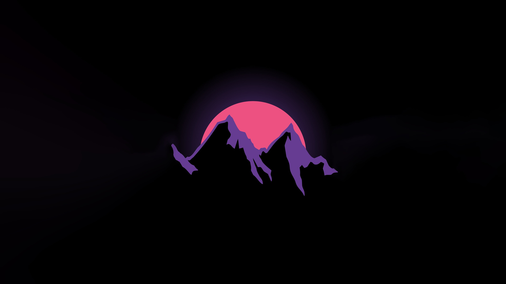

Cascading Style Sheets (CSS) is a style sheet language used for describing the presentation of a document written in a markup language such as HTML or XML (including XML dialects such as SVG, MathML or XHTML). CSS is a cornerstone technology of the World Wide Web, alongside HTML and JavaScript.[2]
CSS is designed to enable the separation of content and presentation, including layout, colors, and fonts.[3] This separation can improve content accessibility; provide more flexibility and control in the specification of presentation characteristics; enable multiple web pages to share formatting by specifying the relevant CSS in a separate .css file, which reduces complexity and repetition in the structural content; and enable the .css file to be cached to improve the page load speed between the pages that share the file
